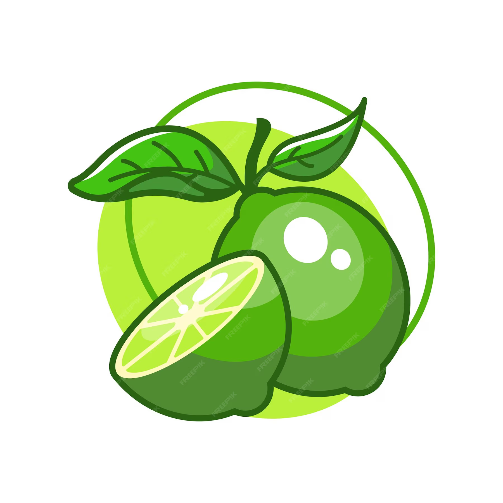
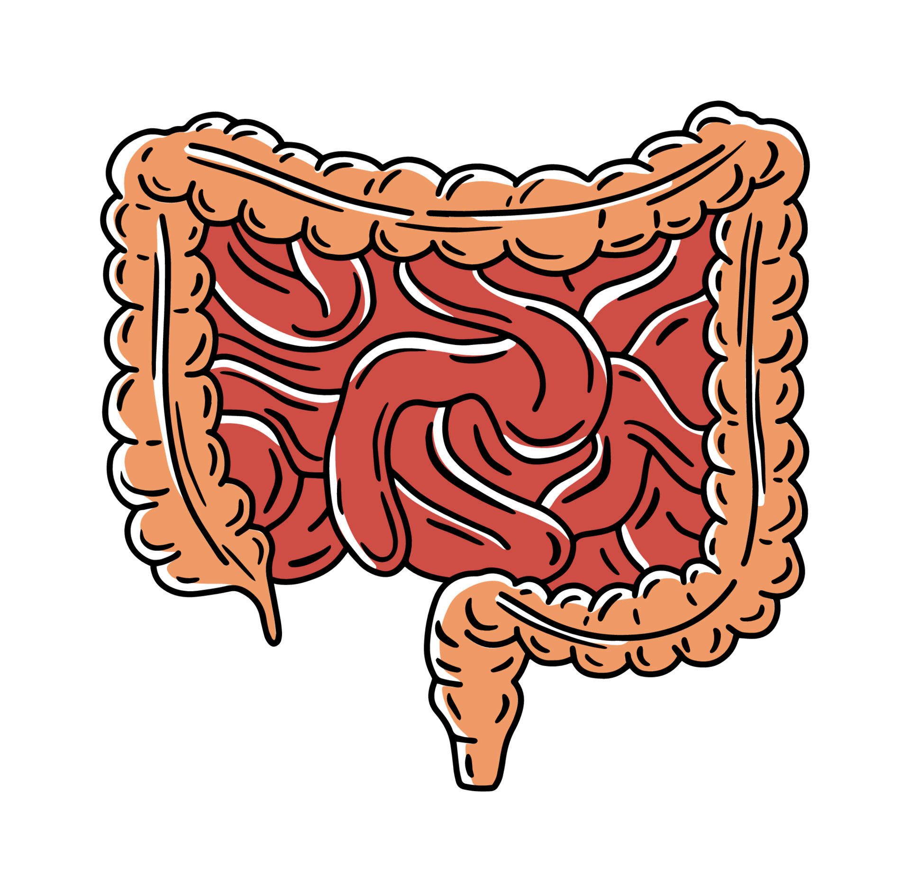
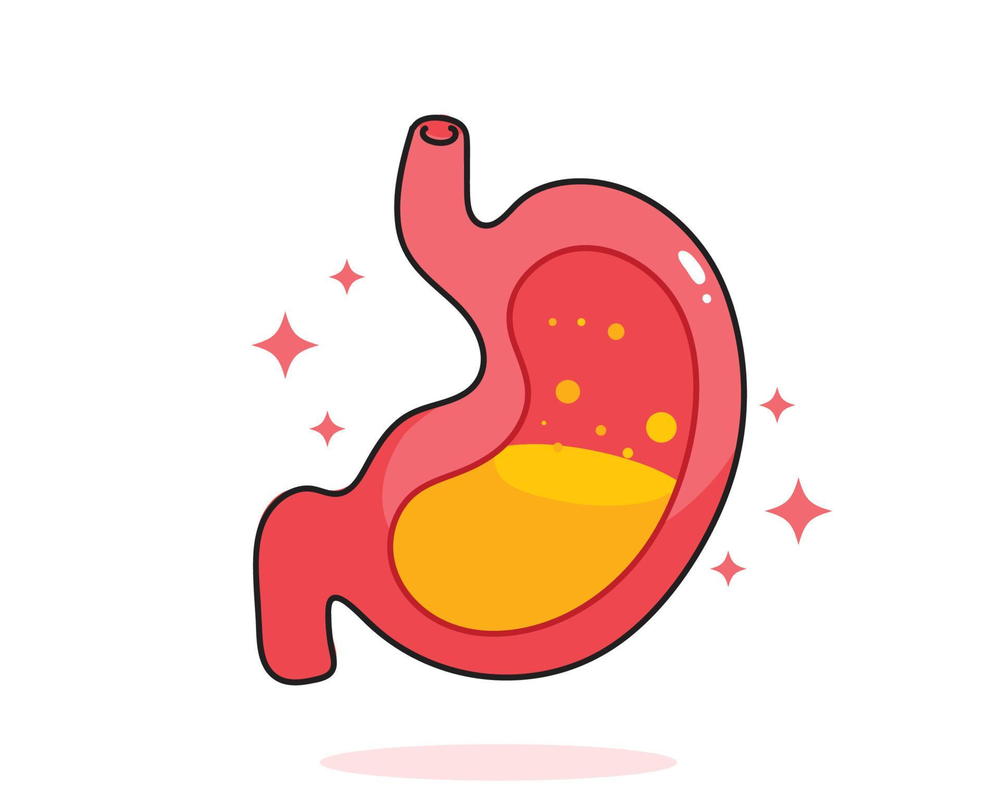

Descubra o Poder do Limão
O limão é uma fruta versátil, conhecida por seus benefícios à saúde, seu sabor refrescante e seu uso em mitos e curiosidades ao longo da história.
Saiba MaisBenefícios do Limão

Rico em Vitamina C
Fortalece o sistema imunológico, ajuda na produção de colágeno e combate os radicais livres.

Efeito Detox
Ajuda a desintoxicar o corpo, eliminando toxinas e promovendo a saúde do fígado.

Melhora a Digestão
Estimula a produção de enzimas digestivas e ajuda a aliviar desconfortos gástricos.
Desvendando os Mitos
O limão é cercado de mitos. Vamos esclarecer os principais:
- O limão emagrece sozinho? Não. Ele pode ajudar em dietas, mas não substitui uma alimentação balanceada.
- Água com limão alcaliniza o corpo? Apesar do mito, nosso organismo regula o pH de forma natural.
- Limão clareia a pele? Cuidado! O uso direto na pele pode causar queimaduras ao sol.
Explore Mais Sobre o Limão
Receitas, dicas e curiosidades estão à sua disposição. Navegue pelo nosso site para aproveitar ao máximo essa fruta incrível.